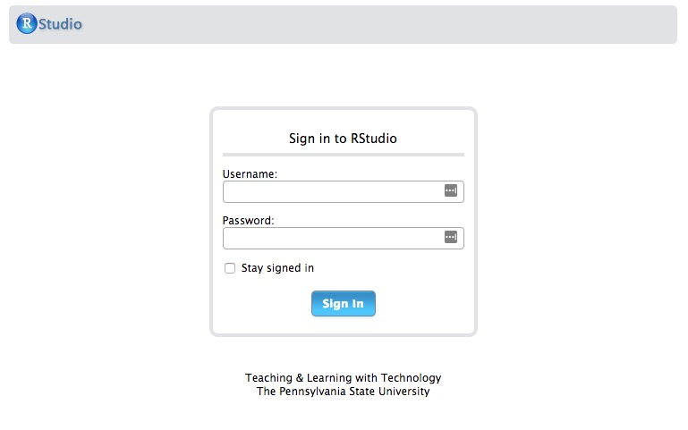
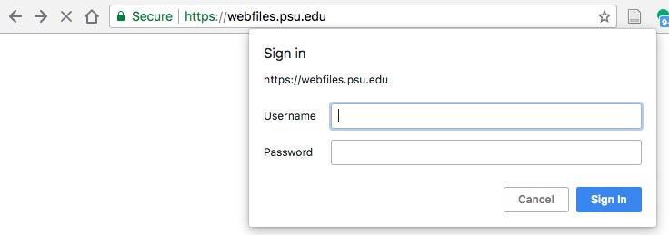

Using RStudio Server @ Penn State
Rick Gilmore
2018-08-17 06:53:32
Purpose
This document describes how to log-on and use Penn State’s RStudio Server instance from a web browser.
Prerequisites
- A Penn State Access Account user ID (e.g. rog1).
- A web browser.
- A computer that is connected to the Penn State network via PSU wifi, or a physical network connection, or a connection to Penn State’s network via a Virtual Private Network (VPN) application like Cisco AnyConnect.
Procedure
Connect to the Penn State network.
Start your web browser.
- Connect to https://lxclusterapps.tlt.psu.edu:8787 or to https://lxclusterapps-bygone.tlt.psu.edu:8788
- You should see the following login page:

Enter your PSU access ID (e.g., rog1) in the
Usernamefield (Do not add@psu.edu), and enter your PSU password in thePasswordfield. The use of a password manager like LastPass, 1Password, or DashLane is highly recommended.Hit the
Sign Inbutton or press return on your keyboard. You should see an RStudio window that looks very much like this one.
You are now ready to use RStudio Server!
RStudio Server and PASS space
The RStudio Server application uses your PASS space for file storage.
To access your PASS space and upload files to it (like data),
- Visit https://webfiles.psu.edu/. You will see a login window like this:

- Enter your Penn State Access ID (e.g. rog1) and password. You should see the WebFiles interface:

Click on the
PASS Personal (X)text or the+icon in the left panel. This will open a window on the right that shows the contents of your PASS space.You may create new folders, upload, and download files using the WebFiles application.
Press the
logoutbutton in the upper right to logout when you are finished.